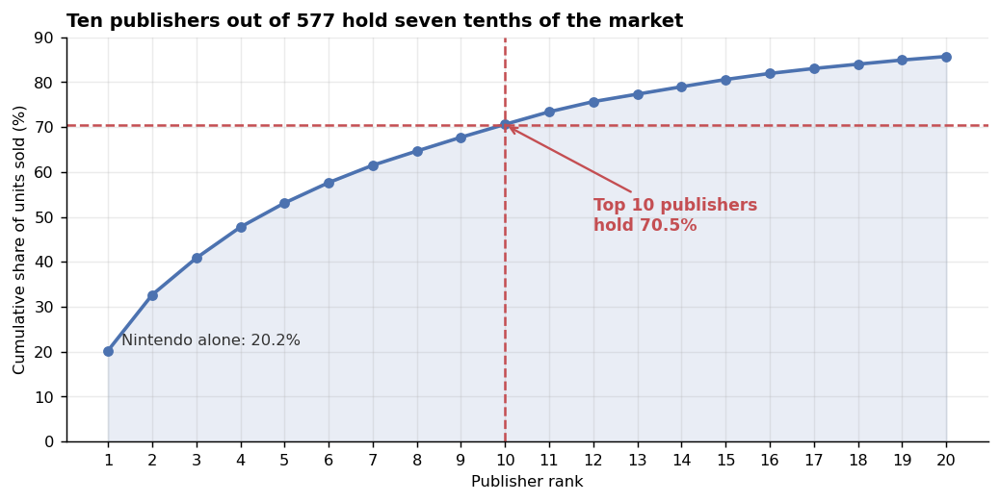
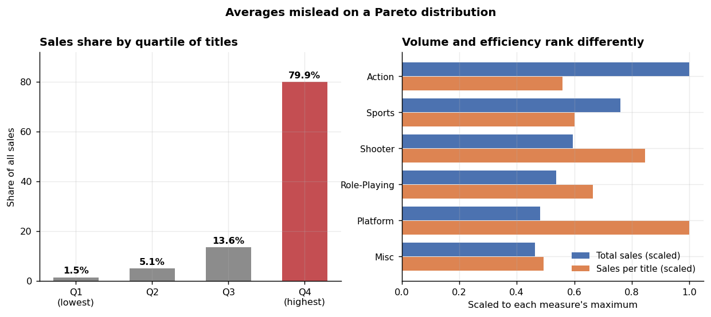
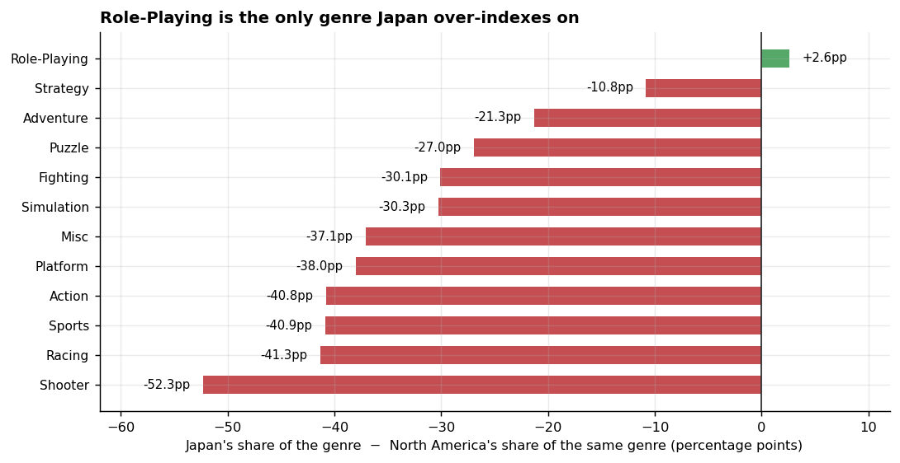

Video Game Sales SQL Analysis
16,327 game titles across 31 platforms and 577 publishers, analysed end to end in MySQL 8.0 — from data quality checks through CTEs and window functions to business scenarios. A profiling query caught an apparent market collapse that was really a truncated dataset, before it reached any conclusion.
The brief
Where does the money in this market actually sit?
A catalogue of every charting game release from 1980 to 2020, with unit sales split by region. The commercial questions are the ones a publisher would ask before greenlighting a title: which genres return the most per release, how concentrated is the competition, and does a catalogue built for North America travel?
The whole analysis is SQL — 485 lines organised into eight sections, from profiling through aggregation, subqueries, ranking and frame-based window functions to scenario queries. It runs end to end on MySQL 8.0 without errors.
| Dimension | Count |
|---|---|
| Titles | 16,327 |
| Platforms | 31 |
| Genres | 12 |
| Publishers | 577 |
| Period | 1980 – 2020 |
Data quality first
Section 1 of the script, before a single business question
| Check | Result |
|---|---|
| Missing game names or years | None |
| Missing publishers | 136 rows marked N/A |
| Regional sales summing to global | Zero mismatches |
| Duplicate titles | 1 |
| Release year after 2017 | 1 row |
The internal consistency check is the one worth calling out: NA + EU + JP + Other reconciles to Global_Sales on every one of the 16,327 rows. That means regional shares can be computed and compared without a rounding caveat attached to every number — which the Japan analysis below depends on entirely.
Aggregate sales by year and the chart falls off a cliff after 2015. Read at face value, that is a dramatic finding — the games market collapsing by more than 90% in a single year.
It is an artifact. The dataset was compiled during 2016, so that year holds a few months of releases against twelve months for every other year, and 2017–2020 are near-empty. Nothing collapsed; the data simply stops.
Every trend query in the script is therefore bounded where year between 1980 and 2016, and the 2016 endpoint is read as incomplete rather than as a decline. A year-over-year growth query without that bound would have reported roughly −90% for the final year and invited exactly the wrong conclusion.
Findings
1 The market is extraordinarily concentrated
A running total over publisher sales, ordered by size, gives the cumulative market share curve:

| Rank | Publisher | Sales (M units) | Cumulative share |
|---|---|---|---|
| 1 | Nintendo | 1,784.4 | 20.2% |
| 2 | Electronic Arts | 1,093.4 | 32.6% |
| 3 | Activision | 721.4 | 40.8% |
| 4 | Sony Computer Entertainment | 607.3 | 47.7% |
| 5 | Ubisoft | 473.5 | 53.1% |
| 10 | — top ten combined — | — | 70.5% |
Nintendo alone holds 20.2% — more than Electronic Arts and Activision combined. The remaining 567 publishers share under 30% of the market between them.
2 Sales follow a Pareto distribution, so averages lie
Splitting all 16,327 titles into quartiles by units sold, using NTILE(4):

| Quartile | Games | Sales range (M) | Share of all sales |
|---|---|---|---|
| 1 (lowest) | 4,082 | 0.01 – 0.06 | 1.5% |
| 2 | 4,082 | 0.06 – 0.17 | 5.1% |
| 3 | 4,082 | 0.17 – 0.48 | 13.6% |
| 4 (highest) | 4,081 | 0.48 – 82.74 | 79.9% |
The top quarter of titles produces four fifths of all sales, and the top title sells 82.74M against a bottom-quartile ceiling of 0.06M — a spread of more than a thousandfold. On a distribution shaped like that, mean sales per game is a meaningless summary statistic: it describes no actual game and is driven almost entirely by a handful of outliers. Medians and quartile shares are reported instead wherever the distribution is being described.
3 Japan is a structurally different market
Comparing each genre's share of Japanese sales against its share of North American sales. If the two markets had the same taste, every difference would be near zero. They do not:

| Genre | Japan share − NA share |
|---|---|
| Role-Playing | +2.6pp |
| Strategy | −10.8pp |
| Fighting | −30.1pp |
| Action | −40.8pp |
| Shooter | −52.3pp |
Every genre sells a smaller share in Japan than in North America except one. Shooters — the backbone of the Western release calendar — under-index by 52.3 percentage points, while Role-Playing is the only category Japan buys more of.
The implication for a publisher is concrete: a Japanese launch strategy needs a different catalogue, not a translated one. Localising a shooter-heavy slate targets the genre Japan buys least.
4 Volume and efficiency rank in opposite directions
Action is the biggest genre by total sales at 1,722.9M units, which makes it look like the safest bet. That ranking is an artifact of release volume — 3,253 Action titles exist, far more than any other genre. Per title, the order inverts:
| Genre | Games released | Avg sales per game (M) |
|---|---|---|
| Platform | 876 | 0.947 |
| Shooter | 1,282 | 0.800 |
| Action | 3,253 | 0.530 |
| Adventure | 1,276 | 0.184 |
Platform titles sell 1.8× as well per release as Action titles despite a quarter of the release volume. The sharpest contrast is Shooter against Adventure: near-identical release counts (1,282 and 1,276), but Shooter averages 4.3× the units per title.
Total sales answers "where is the market", average sales per title answers "what is a release here worth". A greenlight decision needs the second question, and the two produce almost opposite rankings.
The SQL
Eight sections, 485 lines, MySQL 8.0
The market concentration curve in finding 1 is a chained CTE with two window functions — a running total ordered by size, and a whole-partition total to divide against:
-- How concentrated is the market? -- Running total of publisher sales as a share of the whole market. with publisher_totals as ( select publisher, sum(global_sales) as total_sales from vgsales group by publisher ), ranked as ( select publisher, total_sales, sum(total_sales) over (order by total_sales desc rows between unbounded preceding and current row) as running_total, sum(total_sales) over () as market_total, row_number() over (order by total_sales desc) as publisher_rank from publisher_totals ) select publisher_rank, publisher, round(total_sales,2) as total_sales, round(100 * running_total / market_total,2) as cumulative_market_pct from ranked where publisher_rank <= 20 order by publisher_rank;
Year-over-year growth uses LAG with a NULLIF guard against division by zero, and the year bound that keeps the incomplete 2016 tail out of the trend:
-- Year-over-year growth rate, not just the difference. with yearly as ( select year, sum(global_sales) as sales from vgsales where year between 1980 and 2016 group by year ) select year, round(sales,2) as sales, round(lag(sales) over (order by year),2) as prev_year, round(100 * (sales - lag(sales) over (order by year)) / nullif(lag(sales) over (order by year),0),1) as growth_pct from yearly order by year;
A three-year moving average with an explicit frame smooths out the console launch cycle, which otherwise dominates any year-on-year read:
select year, round(sales,2) as sales, round(avg(sales) over (order by year rows between 1 preceding and 1 following),2) as moving_avg_3yr from yearly order by year;
Aggregation
GROUP BY, HAVING, conditional aggregation with CASE.
Subqueries
Scalar subqueries in WHERE and SELECT, derived tables.
Window functions
DENSE_RANK, RANK, ROW_NUMBER, NTILE, LAG, LEAD, FIRST_VALUE, LAST_VALUE.
Frames
Running totals and moving averages with explicit ROWS BETWEEN clauses.
Recommendations
What a publisher should take from this
- Judge genres on sales per title, not total sales. Action leads on volume purely because it has the most releases. Platform returns 1.8× as much per title on a quarter of the output.
- Treat Japan as a separate catalogue decision. Role-Playing is the only genre it over-indexes on, and Shooter under-indexes by 52.3 points. Localisation does not fix a genre mismatch.
- Plan for a Pareto outcome. Four fifths of sales come from the top quartile of titles. A slate strategy that assumes average performance across releases is budgeting for an outcome the distribution almost never produces.
- Bound every trend query at 2016. The final year is a compilation artifact. Any dashboard built on this table needs that filter baked in, or it will report a collapse that never happened.
Limitations
- Units, not revenue. Every figure is copies sold. Price, platform royalties, development cost and margin are absent, so "sells best" is not the same as "most profitable".
- Charting titles only. The catalogue covers releases that charted, so the true long tail of low-selling games is under-represented — which means the Pareto concentration reported here is, if anything, understated.
- Physical-era data. The period is dominated by boxed retail sales. Digital distribution, free-to-play and mobile revenue are largely outside this dataset, and they are most of the modern market.
- 136 titles have no publisher and are excluded from publisher-level aggregates, including the concentration curve.
- 2016 onwards is incomplete by construction, so nothing in this analysis speaks to the market after 2015.